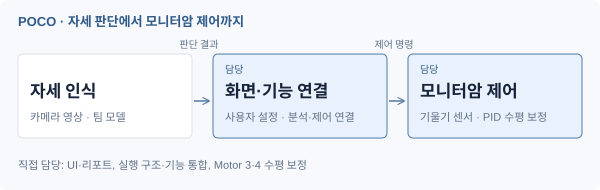
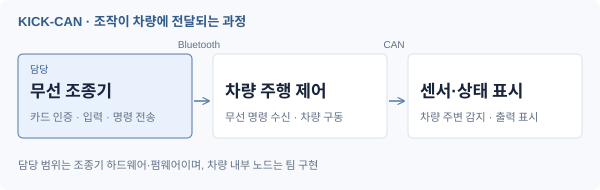

POCO
AI 자세 코칭 모니터암
사용자의 자세를 분석하고, 피드백과 모니터 위치·수평 조절로 연결한 자세 코칭 시스템.
MY ROLE
프로젝트 자세히 보기 01UI·리포트, 구조 설계·코드 통합,
멀티프로세싱, IMU PID 수평 보정

소프트웨어의 구조와 동작 로직을 설계하는 일을 좋아합니다.
화면에서 시작한 개발 경험을 센서와 장치로 넓히며,
임베디드 시스템과 로보틱스를 함께 탐구하고 있습니다.
C / C++ / C# / Python
STM32 · FreeRTOS
UART · SPI · ADC / DMA
ROS 2 Jazzy · Nav2 · AMCL
FSM · 시스템 통합
PyQt · Streamlit · OpenCV
Unity · Git
ROBOTICS / SMART FARM
작물 상태와 수확할 위치를 확인하는 예찰 로봇, 수확·이송 로봇과 선별 시스템이 협업하는 스마트팜 자동화 프로젝트입니다.
COMPLETED PROJECTS
완료한 대표 프로젝트 · POCO / KICK-CAN / PLC

AI 자세 코칭 모니터암
사용자의 자세를 분석하고, 피드백과 모니터 위치·수평 조절로 연결한 자세 코칭 시스템.
UI·리포트, 구조 설계·코드 통합,
멀티프로세싱, IMU PID 수평 보정


STM32 분산 임베디드 RC카
RFID 인증 기반 무선 Controller와 CAN 차량 네트워크를 연결한 무선 조종·차량 구동·센서·화면 표시를 연결한 시스템.
Controller 하드웨어·펌웨어,
인증·입력 처리·무선 패킷 송신·FSM

소재 분류·적재·배출 자동화 시스템
금속·비금속 소재를 구분해 창고에 적재하고, 조작 화면에서 선택한 위치 또는 창고 전체의 소재를 꺼내는 자동화 공정.
소재 배출 순서 설계, 선택·전체 배출 구현,
작업 전환과 중복 명령 방지 제어
EXPERIENCE
게임의 로직과 서비스 운영에서 시작해,
센서와 모터가 연결된 시스템으로
개발의 범위를 넓혀가고 있습니다.
C/C++, WinAPI와 DirectX로 게임 시스템을 구현하고, MFC로 개발 도구를 만들며 프로그래밍의 기초를 쌓았습니다.
이지테크핀에서 Unity 모바일 게임 클라이언트를 개발했습니다. 신규 기능, REST API 연동과 결제·광고 오류 대응을 통해 예외 상황과 유지보수의 중요성을 배웠습니다.
3인 인디게임 팀의 유일한 개발자로 전체 프로그래밍과 구조 설계를 맡았습니다. 기능 통합, 테스트와 빌드 안정화를 거쳐 모바일 게임을 출시했습니다.
AI 융합 로봇 SW 교육과정에서 STM32 펌웨어와 POCO 시스템을 구현했습니다. 현재는 스마트팜 예찰 로봇의 자율주행·위치 추정, FSM 설계와 로봇 구조 통합을 진행하고 있습니다.